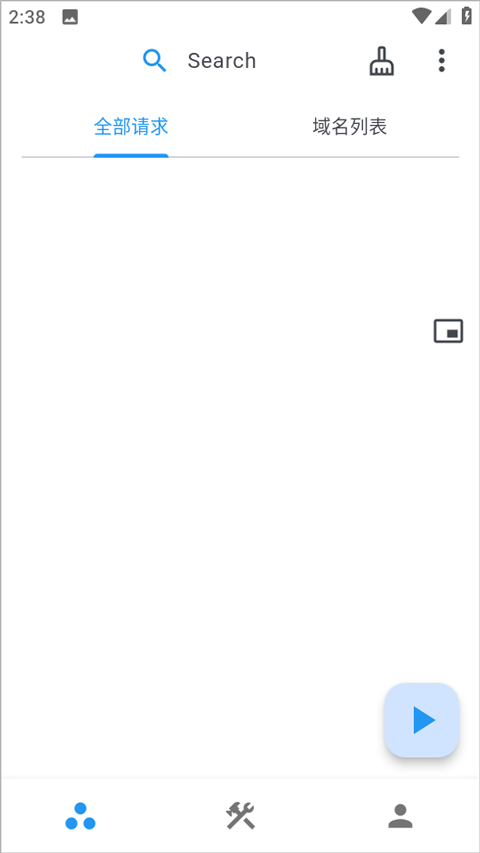

ProxyPin 装了一年半后，哪些功能真的在天天用
从 v1.1.7 用到现在 v1.3.3，当初抱着"免费抓包工具试试"的心态装上，现在每天开机先把它挂上。这篇是实打实的长期使用报告。
当初为什么装它
说起来挺朴素——之前用别的工具要么要 PC 开着挂代理，要么手机端操作起来不顺手。ProxyPin 是朋友随手推的，去它的官网看了下介绍，说手机上就能直接开代理抓包，安装包从官方下载拿也不大。那时候对抓包的理解还停在"看看接口有没有明文"，完全没想到后面会把它用成日常开发的一部分。

越用越顺手的：context 对象让脚本真能写了
刚开始写脚本的时候很别扭——onRequest 里存的东西 onResponse 里取不到，每次都得想办法绕。后来才发现 context.storage 这个东西，同一个脚本每次调用都能读写同一份存储。这一下就打开了局面。
最常用的一个脚本是请求去重：500ms 内相同 method + url 的重复请求直接跳过，context.storage 里记着上次请求的 key 和时间戳。以前为了实现这个逻辑得写个外部的 sqlite 文件来回倒腾，现在几行 JS 搞定。还有个计数器脚本，记某个 API 被调了多少次，context.log 直接打到控制台看，不用额外开日志文件。
context.sleep 用得不多但每次都救场——模拟网络慢的时候不想真的断网，让 onResponse 延迟 1.5 秒返回就行，App 的 loading 状态和超时处理一下就测出来了。倒是 async 我至今没在生产脚本里用过，文档说适合做旁路操作，总觉得在手机上开异步任务会影响抓包本身的稳定性，可能是我多虑了。
越用越烦的：有些功能藏得太深
HAR 导出是个好东西，但说实话前半年我根本没注意到它。直到有一次跟后端同事联调，对方说"你导个 HAR 给我"，我才翻到这个功能。导出选项倒是挺全的——选中几条、按时间段、整个历史都能导，也能选只带头还是完整内容。但入口藏在请求列表的操作菜单里，新用户根本不会往那点。
还有 HTTP/2 协议支持，v1.1.9 就加进来了，但设置项在"协议设置"子菜单里，我也是某天翻看设置才发现。默认不开，而很多 App 现在已经全走 HTTP/2 了。开启后倒也没什么特殊感觉——ProxyPin 自动协商 ALPN 握手、自动 HPACK 解压，界面上看到的还是熟悉的请求/响应视图，多路复用和二进制帧这些底层细节完全透明。省心是省心，但默认不开、也没个提示说"这个 App 正在用 HTTP/2 但你没开支持"，总觉得少了点什么。

离不开的：请求映射让前后端真能并行
这个功能是我现在每天都在用的。之前总以为请求映射和请求重写差不多，一个改内容一个不发请求，差别能有多大。实际用了才知道，根本不在一个量级。
请求重写还是要把请求发到远程服务器，得等网络返回；请求映射直接本地瞬时返回，服务器那一侧根本不知道有人在请求。前后端并行开发的时候，我把所有接口都映射到本地 JSON 文件，后端还在写接口的时候前端这边已经能调完所有页面了。最狠的是测试边界条件——把成功接口映射成 {"code":500,"msg":"模拟服务器错误"}，App 的重试逻辑和异常弹窗直接就能验。
映射动态脚本也好用，参数不同返回不同数据。不过我自己写脚本的时候踩过坑：通配符映射 https://api.myapp.com/users/*/profile 能匹配所有用户，但如果想根据 URL 里的 user_id 返回不同内容，就得写 JS 脚本来提取参数，那几行正则每次都要去ProxyPin文档翻一下才能想起来。
碰都没碰过的：HAR 导入回放
HAR 导出我现在用得飞起，但导入回放这个功能至今没试过。文档说能把 HAR 文件导进来回放和分析，可能是我还没碰到需要跨工具对比流量的场景吧。性能测试那边我用的是更专门的工具，团队协作直接发 HAR 文件给同事，对方用 Chrome DevTools 打开就行，没必要绕回 ProxyPin 再导一遍。
观感修正：当初低估了脚本引擎的上限
一开始以为 ProxyPin 就是个抓包看明文的工具，写点简单的 onRequest/onResponse 改改参数顶天了。context.storage 让状态能在调用间持久化之后，突然发现可以做的事远超想象——请求去重、自动标记异常 API、跨请求的数据流追踪……这些以前要靠 Python 脚本 + sqlite 数据库在 PC 上实现的东西，现在在手机上几行 JS 就能跑。
反过来讲，当初以为 HAR 导出只是个"存下来以后看"的功能，现在觉得它才是真正的生产力杠杆。跟后端联调出问题，导个 HAR 发过去，对方用 DevTools 打开，耗时、请求头、响应体、重定向链条一目了然。比截图清晰一百倍，比文字描述准确一万倍。
去留结论：暂时不会卸载
ProxyPin 装在手机上一年半，从偶尔用到现在开机必开。脚本引擎是核心竞争力——能写 JS 脚本来自动化处理流量，这个在同类工具里不算常见。请求映射和 HAR 导出是团队协作场景下的两大杀招。
真要说什么信号出现就该换了，可能是遇到 HTTP/3 抓包需求的时候——目前的资料里还没提 HTTP/3 支持，现在主流 App 大多停在 HTTP/2，但再一两年就不好说了。还有就是脚本引擎如果能支持更多 API，比如自动定时抓包、触发后导入 HAR 自动分析，那就更完美。这套资料在GitHub、Gitee和GitCode上都能找到，哪套方便用哪套。不过目前这些都只是锦上添花，不影响它作为主力抓包工具的地位。